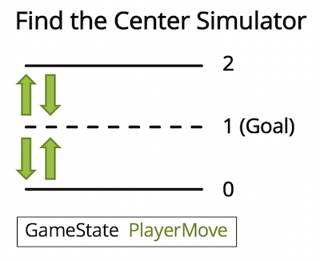
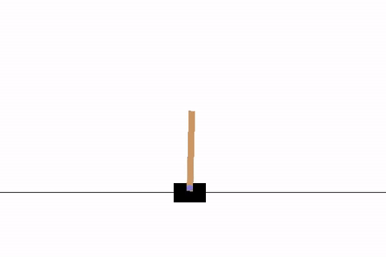
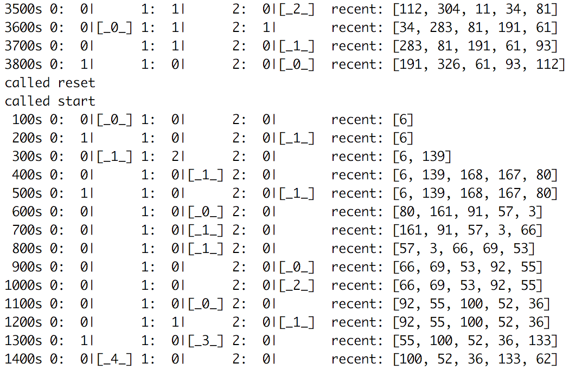
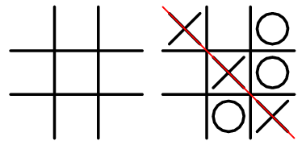
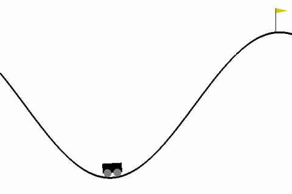
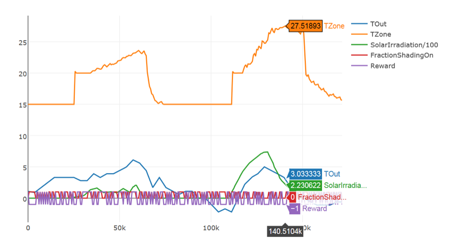

Examples Overview
This page contains working examples of Inkling code in conjunction with python and C++ simulator files. All of these examples and the libraries that accompany them can be found within BonsaiAI’s SDK GitHub repo and are also linked for each example.
All of the Python, OpenAI Gym, and EnergyPlus examples can be trained in the cloud with managed simulators. A full list of supported Docker containers for remotely managed simulators can be found in the Project File Reference.
If you have any suggestions of examples you’d like to see us implement please contact the support team.
Custom Simulator Examples
- Basic Python/C++ Simulation: A project called Find the Center which walks you through how to create a simple Inkling file that connects to a basic Python or C++ simulator.
- Stellar Cartpole: A stand-alone version of Cartpole using the machine teaching pattern of STAR.
- SimPy Elevator Simulation: A basic example of how to use SimPy to simulate a scenario. This one is an elevator dropping people off on 3 floors.
- Tic-tac-toe: A simple implementation of pixel manipulation through the Image.Gray type for a tic-tac-toe board. Also showcases the use of an algorithm hint.
OpenAI Gym Examples
- Mountain Car: A simple control problem where a car must build up enough momentum to climb a hill.
- Cartpole: A simple control problem where a cart must make a simple move to keep a pole balanced on top.
- Predictor Class Cartpole: Using the same Inkling as original Cartpole, but using the Predictor Class to obtain simulation predictions via Python script.
- Event Driven Cartpole: Using the same Inkling as original Cartpole, but using the Event class to drive the simulation.
Real World Example
- HVAC with EnergyPlus: An example of climate control machine teaching using EnergyPlus and BCVTB for simulation.
Simulink Example
- Simulink Househeat: The Simulink version of an HVAC system taking into account the outdoor environment, the thermal characteristics of the house, and the house heating system.
Basic Python/C++ Simulation

Download the full source code on GitHub if you want to run this simulator locally.
In this example, we’ll explore the statements that are part of the Find the Center game, including options for either a Python or C++ simulator file and the Inkling file. This is a basic example of Inkling and how to connect to a custom simulator. It demonstrates the differences between using libbonsai (C++) and the bonsai-ai (Python) libraries.
Find the Center is a simple game where the AI seeks the average value between two numbers. In this game, the AI begins at a random value of 0, 1, or 2. The AI then can move to a lower number by outputting -1, a higher number by outputting +1, or staying on the same number by outputting 0. The goal of Find the Center is to remain in the center of 0 and 2 (the number 1).
Inkling File
Types
type GameState {
value: Number.Int8
}
The GameState type has one field, value, with type Number.Int8.
type PlayerMove {
delta: number<Dec = -1, Stay = 0, Inc = 1>
}
The PlayerMove type has one field, delta, with three possible values: -1, 0, and 1.
Concept Graph
graph (input: GameState): PlayerMove {
concept find_the_center(input): PlayerMove {
curriculum {
source find_the_center_sim
}
}
output find_the_center
}
The concept is named find_the_center, and it expects input about the state of the game (of type GameState) and replies with output of type PlayerMove. This is the AI’s next move in the simulation.
The curriculum trains the concept using the find_the_center_sim simulator. It defines no lessons, so a default lesson is assumed.
Simulator
simulator find_the_center_sim(action: PlayerMove): GameState {
}
The simulator is called find_the_center_sim (shown in #simulator-file) and takes an input action of type PlayerMove. It returns the state of type GameState.
Simulator File
""" This Basic simulator is for learning the simulator interface.
It can be used in this case to find the center between two numbers.
"""
import bonsai_ai
from random import randint
from time import clock
class BasicSimulator(bonsai_ai.Simulator):
""" A basic simulator class that takes in a move from the inkling file,
and returns the state as a result of that move.
"""
min = 0
max = 2
goal = 1
started = False
def episode_start(self, parameters=None):
""" called at the start of every episode. should
reset the simulation and return the initial state
"""
# reset internal initial state
self.goal_count = 0
self.value = randint(self.min, self.max)
# print out a message for our first episode
if not self.started:
self.started = True
print('started.')
# return initial external state
return {"value": self.value}
def simulate(self, action):
""" run a single step of the simulation.
if the simulation has reached a terminal state, mark it as such.
"""
# perform the action
self.value += action["delta"]
if self.value == self.goal:
self.goal_count += 1
self.record_append({"goal_count": self.goal_count}, "ftc")
# is this episode finished?
terminal = (self.value < self.min or
self.value > self.max or
self.goal_count > 3)
state = {"value": self.value}
reward = self.goal_count
return (state, reward, terminal)
def episode_finish(self):
print('Episode', self.episode_count,
'reward:', self.episode_reward,
'eps:', self.episode_rate,
'ips:', self.iteration_rate,
'iters:', self.iteration_count)
if __name__ == "__main__":
config = bonsai_ai.Config()
# Analytics recording can be enabled in code or at the command line.
# The commented lines would have the same effect as invoking this
# script with "--record=find_the_center.json".
# Alternatively, invoking with "--record=find_the_center.csv" enables
# recording to CSV.
# config->set_record_enabled(true);
# config->set_record_file("find_the_center.json");
brain = bonsai_ai.Brain(config)
sim = BasicSimulator(brain, "find_the_center_sim")
sim.enable_keys(["delta_t", "goal_count"], "ftc")
print('starting...')
last = clock() * 1000000
while sim.run():
now = clock() * 1000000
sim.record_append(
{"delta_t": now - last}, "ftc")
last = clock() * 1000000
continue
// Copyright (C) 2017 Bonsai, Inc.
#include <iostream>
#include <memory>
#include <string>
#include <random>
#include <chrono>
#include "bonsai.hpp"
// std
using std::cout;
using std::endl;
using std::make_shared;
using std::move;
using std::shared_ptr;
using std::string;
using std::chrono::high_resolution_clock;
using std::chrono::duration_cast;
using std::chrono::microseconds;
using std::random_device;
using std::mt19937;
using std::uniform_int_distribution;
// bonsai
using bonsai::Brain;
using bonsai::Config;
using bonsai::InklingMessage;
using bonsai::Simulator;
// random number generator
random_device rd;
mt19937 rng(rd());
// basic simulator
class BasicSimulator : public Simulator {
constexpr static int8_t _min = 0, _max = 2, _goal = 1;
int8_t _goal_count = 0;
int8_t _value = 0;
uniform_int_distribution<int8_t> _uni{_min, _max};
public:
explicit BasicSimulator(shared_ptr<Brain> brain, string name )
: Simulator(move(brain), move(name)) {}
void episode_start(const InklingMessage& params,
InklingMessage& initial_state) override;
void simulate(const InklingMessage& action,
InklingMessage& state,
float& reward,
bool& terminal) override;
};
void BasicSimulator::episode_start(
const InklingMessage& params,
InklingMessage& initial_state) {
// reset
_goal_count = 0;
_value = _uni(rng);
// set intial state
initial_state.set_int8("value", _value);
// print a message for our first episode
static bool started = false;
if (!started) {
started = true;
cout << "started." << endl;
}
}
void BasicSimulator::simulate(
const InklingMessage& action,
InklingMessage& state,
float& reward,
bool& terminal) {
// perform the action
_value += action.get_int8("delta");
if (_value == _goal)
_goal_count++;
// output
state.set_int8("value", _value);
record_append<size_t>("goal_count", _goal_count, "ftc");
terminal = _value < _min || _value > _max || _goal_count > 3;
reward = _goal_count;
}
int main(int argc, char** argv) {
auto config = make_shared<Config>(argc, argv);
// Analytics recording can be enabled in code or at the command line.
// The commented lines have the same effect as invoking this simulator with
// "--record=find_the_center.json".
// Alternatively, invoking with "--record=find_the_center.csv" enables recording
// to CSV.
// config->set_record_enabled(true);
// config->set_record_file("find_the_center.json");
auto brain = make_shared<Brain>(config);
BasicSimulator sim(brain, "find_the_center_sim");
// enable the specified keys, prepending each with "ftc" in the final log line
sim.enable_keys({"delta_t", "goal_count"}, "ftc");
cout << "starting..." << endl;
auto last = high_resolution_clock::now();
while (sim.run()) {
// You can add data to the currently active record from your top level run loop.
// You can also add data to the record in your Simulator callbacks (see above).
// The record gets flushed to disk at the end of each call to Simulator::run.
auto millis = duration_cast<microseconds>(high_resolution_clock::now() - last).count();
sim.record_append<int64_t>("delta_t", millis, "ftc");
last = high_resolution_clock::now();
}
return 0;
}
This is a basic simulator for learning the simulator library. In this case it is used to find the center between two numbers, 0 and 2. The goal, as outlined in the Inkling file, is to reach 1. The moves that the simulator is able to make are sent from the Inkling file to the simulator and the state of the simulator is sent back to Inkling.
This example also includes a demonstration of how to use the record data file functionality. Analytics recording can be enabled in code or at the command line. Usage is explained in the Recording Data to File section of the Simulator Reference.
The README file contained in the project has instructions for running this simulator in either Python or C++.
Stellar Cartpole

Download the full source code on GitHub if you want to run this simulator locally. If you want to run Cartpole remotely on the Bonsai Platform as a managed simulator, create a new BRAIN selecting the Cartpole demo on beta.bons.ai.
This version of Cartpole expands on the OpenAI gym version of cartpole and exposes machine teaching logic and the rendering modeled by the classic cart-pole system implemented by Rich Sutton et al. This example will showcase the simulator file, connector file, and machine teaching file to explain how each piece is used in conjunction to train a BRAIN.
Cartpole is a classic control problem. OpenAI Gym describes it as:
A pole is attached by an un-actuated joint to a cart, which moves along a frictionless track. The system is controlled by applying a force of +1 or -1 to the cart. The pendulum starts upright, and the goal is to prevent it from falling over. A reward of +1 is provided for every timestep that the pole remains upright. The episode ends when the pole is more than 15 degrees from vertical, or the cart moves more than 2.4 units from the center.
Inkling File
Types
type GameState {
position: number,
velocity: number,
angle: number,
rotation: number
}
The type GameState defines four fields: position, velocity, angle, and rotation. This state information is provided by the simulation.
type Action {
command: Number.Int8<left = 0, right = 1>
}
The type Action defines a single field command and assigns it a constrained type.
type CartPoleConfig {
episode_length: Number.Int8,
deque_size: Number.UInt8
}
The type CartPoleConfig defines two fields: episode_length and deque_size. episode_length is a signed Int8 because -1 is used for “run until pole drops”.
Concept Graph
graph (input: GameState): Action {
concept balance(input): Action {
curriculum {
source cartpole_simulator
lesson balancing {
constraint {
episode_length: -1,
deque_size: 1
}
}
}
}
output balance
}
The concept is named balance, and it takes input from the simulator of type GameState. The balance concept outputs the move the AI should make in the simulator. The output is of type Action.
Simulator
simulator cartpole_simulator(action: Action, config: CartPoleConfig): GameState {
}
Simulator cartpole_simulator receives an action of type Action and configuration information of type CartPoleConfig. It returns a value of type GameState that indicates the state of the game after the action is performed.
Simulator File
cartpole.py
import math
import numpy as np
import seeding
from bonsai_ai.logger import Logger
log = Logger()
class CartPoleModel():
def __init__(self):
self.gravity = 9.8
self.masscart = 1.0
self.masspole = 0.1
self.total_mass = (self.masspole + self.masscart)
self.length = 0.5 # actually half the pole's length
self.polemass_length = (self.masspole * self.length)
self.force_mag = 10.0
self.tau = 0.02 # seconds between state updates
# Angle at which to fail the episode
self.theta_threshold_radians = 12 * 2 * math.pi / 360
self.x_threshold = 2.4
self._seed()
self.viewer = None
self.state = None
self.steps_beyond_done = None
def _seed(self, seed=None):
self.np_random, seed = seeding.np_random(seed)
return [seed]
def _step(self, action):
state = self.state
x, x_dot, theta, theta_dot = state
force = self.force_mag if action == 1 else -self.force_mag
costheta = math.cos(theta)
sintheta = math.sin(theta)
temp = (
(force + self.polemass_length * theta_dot * theta_dot * sintheta)
/ self.total_mass)
thetaacc = (
(self.gravity * sintheta - costheta * temp)
/ (self.length *
(4.0/3.0 - self.masspole * costheta * costheta /
self.total_mass)))
xacc = (
temp - self.polemass_length * thetaacc * costheta / self.total_mass
)
x = x + self.tau * x_dot
x_dot = x_dot + self.tau * xacc
theta = theta + self.tau * theta_dot
theta_dot = theta_dot + self.tau * thetaacc
self.state = (x, x_dot, theta, theta_dot)
done = x < -self.x_threshold \
or x > self.x_threshold \
or theta < -self.theta_threshold_radians \
or theta > self.theta_threshold_radians
done = bool(done)
if not done:
reward = 1.0
elif self.steps_beyond_done is None:
# Pole just fell!
self.steps_beyond_done = 0
reward = 1.0
else:
if self.steps_beyond_done == 0:
log.warning("You are calling 'step()' even though this \
environment has already returned done = True. You should \
always call 'reset()' once you receive 'done = True' -- \
any further steps are undefined behavior.")
self.steps_beyond_done += 1
reward = 0.0
return (np.array(self.state),
reward,
done,
{"steps_beyond_done": self.steps_beyond_done})
def _reset(self):
self.state = self.np_random.uniform(low=-0.05, high=0.05, size=(4,))
self.steps_beyond_done = None
return np.array(self.state)
This simulator file is derived from OpenAI Gym’s cartpole environment, but re-factored to have minimal dependency, and rendering factored into a separate file, render.py. This file contains the actual simulation of the pole balancing on the cart.
Connector File
bridge.py
import sys
import bonsai_ai
import star
from cartpole import CartPoleModel
from render import _renderer
log = bonsai_ai.logger.Logger()
star = star.Star()
model = CartPoleModel()
the_renderer = None
class ModelConnector(bonsai_ai.Simulator):
""" A basic simulator class that takes in a move from the inkling file,
and returns the state as a result of that move.
"""
info = {}
started = False
reward = None
terminal = None
def __init__(self, brain, name, config):
super(ModelConnector, self).__init__(brain, name)
def episode_start(self, parameters=None):
""" called at the start of every episode. should
reset the simulation and return the initial state
"""
log.info('Episode {} Starting'.format(self.episode_count))
state = model._reset()
state = star.reset(state)
# print out a message for our first episode
if not self.started:
self.started = True
print('started.')
return state
def simulate(self, brain_action):
""" run a single step of the simulation.
if the simulation has reached a terminal state, mark it as such.
"""
action = star.action(brain_action)
(model_state,
model_reward,
model_terminal,
model_info) = model._step(action)
self.terminal = star.terminal(model_state)
self.info = model_info
self.reward = star.reward(model_terminal)
brain_state = star.state(model_state)
if the_renderer is not None:
the_renderer._render()
return (brain_state, self.reward, self.terminal)
def get_terminal(self):
return self.terminal
if __name__ == "__main__":
config = bonsai_ai.Config(sys.argv)
brain = bonsai_ai.Brain(config)
bridge = ModelConnector(brain, 'the_simulator', config)
if '--render' in sys.argv:
log.info('rendering')
the_renderer = _renderer(model)
log.info('starting simulation...')
while bridge.run():
continue
This file contains all of the connection code, or Python bridge code, to connect the model with the Bonsai Platform. This code facilitates the training of the BRAIN.
Machine Teaching File
star.py
import math
import random
from bonsai_ai.logger import Logger
log = Logger()
class Star():
iteration_count = 0
model_state = None
steps_beyond_done = None
def __init__(self):
# Angle at which to fail the episode
self.theta_threshold_radians = 12 * 2 * math.pi / 360
self.x_threshold = 2.4
def state(self, model_state):
""" This function converts the simulator state into the state
representation the brain uses to learn. """
self.model_state = model_state
brain_state = {
'position': model_state[0],
'velocity': model_state[1],
'angle': model_state[2],
'rotation': model_state[3],
}
print(brain_state)
return brain_state
def terminal(self, model_state):
""" Terminal conditions specify when to end an episode, typically due
to success, failure, or running out of time. In this case, we only
terminate when the pole falls down. """
print(model_state)
x, x_dot, theta, theta_dot = model_state
done = (x < -self.x_threshold or
x > self.x_threshold or
theta < -self.theta_threshold_radians or
theta > self.theta_threshold_radians)
done = bool(done)
return done
def action(self, brain_action):
""" This function converts the action representation the brain learns
to use into the action representation the simulator uses to act in the
simulated environment. """
self.iteration_count += 1
model_action = 0
if brain_action['command'] > 0:
model_action = 1
return model_action
def reward(self, done):
""" Give the brain feedback on how well it is doing in this episode.
In this case, this is simply 1 every time period that the pole is
balanced. The brain's job is to learn to maximize the reward it gets
during the episode, which corresponds to balancing as long as possible.
"""
if not done:
reward = 1.0
elif self.steps_beyond_done is None:
# Pole just fell!
self.steps_beyond_done = 0
reward = 1.0
else:
if self.steps_beyond_done == 0:
log.info("You are calling 'step()' even though this \
environment has already returned done = True. \
You should always call 'reset()' once you receive \
'done = True' -- any further steps are undefined \
behavior.")
self.steps_beyond_done += 1
reward = 0.0
return reward
def reset(self, model_state):
self.iteration_count = 0
brain_state = self.state(model_state)
self.steps_beyond_done = None
return brain_state
This file contains the machine teaching logic, refered to as STAR, which stands for state, terminal, action, and reward functions. Through experimentation this is the code you will be changing to speed up training time or refine your reward function.
SimPy Elevator Simulation

Download the full source code on GitHub if you want to run this simulator locally.
In this example, SimPy, a process-based discrete-event simulation framework based on standard Python, is used to simulate an elevator effectively transporting people to their desired floor. The simulated elevator gets rewarded by having people wait for the least time. This example includes a simple elevator SimPy simulator, a Python simulation, and an Inkling file.
“Processes in SimPy are defined by Python generator functions and may, for example, be used to model active components like customers, vehicles or agents. SimPy also provides various types of shared resources to model limited capacity congestion points (like servers, checkout counters and tunnels).” - SimPy docs
This simulation consumes actions (up, down, open doors) for an elevator given floor requests from randomly-arriving passengers. SimPy has a great framework for simulating time only when state changes occur. This speeds up training for systems that would otherwise be mostly waiting.
In the image to the right, the elevator logs output every 100 seconds, then shows the state of the world, and then a list of recent passengers. The world state is the floor, the number of people waiting, plus the elevator, and the number of people inside.
1: 0| 2: 1| 3: 0| [_1_] shows zero people on the first floor, one person waiting on the second floor, and one person in the elevator on the third floor.
For more ideas of how SimPy can simulate real world problems see the SimPy Examples page.
Inkling File
Types
type FloorState {
Position: number<0, 1, 2>,
Floor1: number<0, 1>,
Floor2: number<0, 1>,
Floor3: number<0, 1>
}
The FloorState type defines the fields returned by the simulation’s advance method.
type Action {
command: number<up = 0, open = 1, down = 2>
}
The Action type defines the possible commands accepted by the elevator. In this case, the command given to the elevator is ‘0’ to open the door, ‘1’ to go up a floor, and ‘2’ to go down a floor.
type ElevatorConfig {
episode_length: Number.Int8
}
Concept Graph
graph (input: FloorState): Action {
concept elevator_plan(input): Action {
curriculum {
source elevator_simulator
}
}
output elevator_plan
}
This concept is named elevator_plan, and it computes an Action given the current FloorState. In this simple example, we are training the concept to make an action (go up a floor, go down a floor, or open the doors) based on the current state of the floor.
The curriculum uses simulator elevator_simulator as its data source. No lesson is specified, so a single simple lesson is assumed.
Simulator
simulator elevator_simulator(action: Action): FloorState {
}
The simulator clause declares that a simulator named elevator_simulator will be connecting to the server for training. This elevator_simulator expects an input action of type Action and replies with a value of type FloorState.
Simulator Excerpt
# Excerpt of simulator class from the elevator_simulator.py file
class ElevatorSimulator(Simulator):
def episode_start(self, parameters=None):
print('called episode_start')
self.env = env = simpy.Environment()
floors = [simpy.Resource(env, 1) for _ in range(0, BUILDING_SIZE)]
store = simpy.Store(env, 1)
state = elevator.Lstate()
person_score = []
reqs = []
env.process(elevator.claim(floors, reqs))
env.process(elevator.person_generator(env, floors, person_score))
env.process(elevator.display_process(env, person_score, state))
# We use the single step version of elevator (elevator_one)
# this allows the simulator to run until the elevator uses a command.
ep = env.process(
elevator.elevator_one(env, floors, state, store, reqs))
self.floors = floors
self.store = store
self.state = state
self.person_score = person_score
self.reqs = reqs
self.ep = ep
return self._get_state()
def simulate(self, action):
command = action['command']
env = self.env
# print('[advance]', end='')
# print('command: {}'.format(command))
self.state.command = command
# pass our command to a resource by way of this doit() method
env.process(doit(self.store, command))
env.run(until=self.ep)
self.ep = env.process(elevator.elevator_one(
self.env, self.floors, self.state, self.store, self.reqs))
# print('stepped to {}'.format(env.now))
state = self._get_state()
done = self._get_done()
reward = None
# only calculate reward for training mode
if not self.predict:
reward = self._elevator_objective()
return self._get_state(), reward, done
def _get_state(self):
""" return the current state of the simulation """
# print('[get_state]', end='')
# if a floor is requested, state=1
values = [min(len(q.queue), 1) for q in self.floors]
state = {'Floor{}'.format(ix+1): v for ix, v in enumerate(values)}
state['Position'] = self.state.floor
# print(state)
return state
def _get_done(self):
self.done = done = self.env.now > SIM_TIME
return done
def _elevator_objective(self):
# print('[objective]', end='')
waiting = elevator.count_waiting(self.person_score)
# print("returning score %d for %d people" % (active, len(scores)))
# return as negative because the simulator maximizes this value.
return -waiting
The full simulator file elevator_simulator.py and elevator simulation file elevator.py for this example is with the rest of the simpy-elevator code on GitHub.
This is a Python simulator which uses the elevator.py custom Python simulation using SimPy. This elevator_simulator.py file repeatedly runs the elevator simulation for each episode of training to get details of where people start out, how many are on the elevator, and what floor they are going to, etc. Each episode the curriculum in Inkling trains the concept by sending a new Action to the BRAIN based on the FloorState of the simulator.
The _elevator_objective function returns a negative waiting value because this value is going to be maximized, and we want to actually minimize the collective group of people’s wait time.
For more information on the functions inside of this simulator class and how to implement them see the Library Reference.
Also note that if you would like to see how this simulator can be run without Bonsai - to demonstrate how the emulator behaves with a hard-coded algorithm - you can do so by running elevator.py simply with Python itself.
Luminance tic-tac-toe

Download the full source code on GitHub to run this simulator.
To demonstrate the use of images in the Bonsai platform, this example will walk you through a simple implementation of tic-tac-toe. The full Inkling file is presented to walk through each part of the file and the rest of the code to run the example is found at the link above.
letters = {"X": [[1, 0, 1], [0, 1, 0], [1, 0, 1]],
"O": [[0, 1, 0], [1, 0, 1], [0, 1, 0]],
" ": [[0, 0, 0], [0, 0, 0], [0, 0, 0]]}
This example will train a BRAIN using a 9x9 grayscale pixel grid (an input matrix) to represent the tic-tac-toe board. The representation of each letter, X, O, and a blank space, each are represented by a 3x3 matrix as shown in the code panel. There are 9 options for movement to correspond with the 9 spaces on the board.
This example also contains an advanced-level algorithm clause in its Inkling File. This clause is not required, but it will help the example train much faster. For more information on use of the algorithm clause see the Inkling Reference.
Inkling File
Types
type GameState {
image: Image.Gray<9, 9>
}
The GameState type defines a field image that uses the complex type Image.Gray to create a 9x9 pixel grid (an input matrix) to represent all possible states of the tic-tac-toe board. Each letter (or blank space) is a 3x3 image, so a 3x3 grid of 3x3 letters (or blanks) results in a 9x9 grid.
type PlayerMove {
move: Number.Int8<1, 2, 3, 4, 5, 6, 7, 8, 9>
}
The PlayerMove type classifies all 9 possible moves the AI can make, one for each space on the tic-tac-toe board.
Concept Graph
graph (input: GameState): PlayerMove {
concept play_tictactoe(input): PlayerMove {
curriculum {
algorithm {
Algorithm: "DQN",
ConvolutionLayers: [{
XSize: 3,
YSize: 3,
XStride: 3,
YStride: 3,
FilterCount: 2
}]
}
source tictactoe_simulator
}
}
output play_tictactoe
}
The concept, play_tictactoe, returns a value of type PlayerMove which indicates which of nine possible actions should be taken. The AI picks this action based on the current state of the game, GameState as an input.
Simulator
simulator tictactoe_simulator(action: PlayerMove): GameState {
}
The simulator clause declares that a simulator named tictactoe_simulator will be connecting to the server for training. This tictactoe_simulator expects an action of type PlayerMove as input and replies with a value of type GameState.
The algorithm clause provides a hint to the AI Engine that a DQN algorithm should be used. It also sets some parameters for this algorithm. This hint is not required for this example but it will help the example train much faster. For more information on use of the algorithm clause see the Inkling Reference.
Simulator File
The full simulator file tictactoe_simulator.py for this example is too long to display in full here but you can see it with the rest of the tic-tac-toe sample code on GitHub.
For more information on the functions inside of this simulator file and how to implement them see the Library Reference.
OpenAI Gym: Mountain Car

Download the full source code on GitHub if you want to run this simulator locally. If you want to run Mountain Car remotely on the Bonsai Platform as a managed simulator, create a new BRAIN selecting the Mountain Car demo on beta.bons.ai
We’ve used pieces of code from this example in several places, but here we’ll walk you through all the various statements that are part of the Mountain Car Inkling file. Each statement is followed by an explanation of the statement.
Mountain Car is a classic control problem. OpenAI Gym describes it as:
A car is on a one-dimensional track, positioned between two “mountains”. The goal is to drive up the mountain on the right; however, the car’s engine is not strong enough to scale the mountain in a single pass. Therefore, the only way to succeed is to drive back and forth to build up momentum.
Inkling File
Types
type GameState {
x_position: number,
x_velocity: number
}
The GameState type defines two fields — x_position and y_position.
const throttleMin = -1.0
const throttleMax = 1.0
type Action {
command: number<throttleMin .. throttleMax>
}
The Action type defines a single field — command — and assigns it a constrained type.
type MountainCarConfig {
deque_size: Number.UInt8
}
The MountainCarConfig type defines a single field - deque_size.
Concept Graph
graph (input: GameState): Action {
concept high_score(input): Action {
curriculum {
source mountaincar_continuous_simulator
lesson get_high_score {
constraint {
deque_size: 1
}
}
}
}
output high_score
}
The output concept is named high_score, and it takes input from the simulator about the state of the game (which is of type GameState). It outputs a value of type Action. This is the AI’s next move in the game.
The curriculum uses the simulator mountaincar_simulator as its data source. One lesson is specified, and it configures the simulation by constraining the deque_size field to a value of 1.
Simulator
simulator mountaincar_continuous_simulator(action: Action, config: MountainCarConfig): GameState {
}
The mountaincar_continuous_simulator receives actions of type Action and configuration information of type MountainCarConfig. It outputs values of type GameState.
Simulator File
import sys
import numpy
import logging
from bonsai_ai import Brain, Config
from bonsai_gym import GymSimulator
log = logging.getLogger('gym_simulator')
log.setLevel(logging.DEBUG)
class MountainCarContinuous(GymSimulator):
environment_name = 'MountainCarContinuous-v0'
simulator_name = 'mountaincar_continuous_simulator'
def gym_to_state(self, observation):
state = {'x_position': observation[0],
'x_velocity': observation[1]}
return state
# As an Estimator, continuous mountaincar returns the command
# as a numpy array.
def action_to_gym(self, actions):
# return actions['command']
return numpy.asarray([actions['command']])
if __name__ == '__main__':
# create a brain, openai-gym environment, and simulator
config = Config(sys.argv)
brain = Brain(config)
sim = MountainCarContinuous(brain)
sim.run_gym()
This is an OpenAI Gym example which uses the OpenAI environment as its simulator. For more information about the simulator used see the Bonsai Gym Common GitHub repo which is a python library for integrating a Bonsai BRAIN with OpenAI Gym environments.
OpenAI Gym: Cartpole
Download the full source code on GitHub if you want to run this simulator locally.
In this example, we’ll walk you through the various statements that are part of the Cartpole Inkling file. Each statement is followed by an explanation of the statement.
Cartpole is a classic control problem. OpenAI Gym describes it as:
A pole is attached by an un-actuated joint to a cart, which moves along a frictionless track. The system is controlled by applying a force of +1 or -1 to the cart. The pendulum starts upright, and the goal is to prevent it from falling over. A reward of +1 is provided for every timestep that the pole remains upright. The episode ends when the pole is more than 15 degrees from vertical, or the cart moves more than 2.4 units from the center.
Inkling File
Types
type GameState {
position: number,
velocity: number,
angle: number,
rotation: number
}
The type GameState defines four fields - position, velocity, angle, and rotation — and assigns a type to each. This information is input from the simulation.
type Action {
command: number<Left = 0, Right = 1>
}
The type Action defines a single flield — action — and assigns it a constrained type.
type CartPoleConfig {
episode_length: Number.Int8,
deque_size: Number.UInt8
}
The type CartPoleConfig defines two fields — episode_length and
deque_size — and assigns each of them a type. episode_length is a signed Int8 because -1 is used for “run until pole drops”.
Concept Graph
graph (input: GameState): Action {
concept balance(input): Action {
curriculum {
source cartpole_simulator
lesson balancing {
constraint {
episode_length: -1,
deque_size: 1
}
}
}
}
output balance
}
The concept is named balance, and it takes input from the simulator. That input is of type GameState. The balance concept outputs the move the AI should make in the simulator. This output is of type Action.
The curriculum defines one lesson, called balancing. It constrains the simulator’s configuration such that the episode_length is -1 and the deque_size is 1 for all episodes.
Simulator
simulator cartpole_simulator(action: Action, config: CartPoleConfig): GameState {
}
Simulator cartpole_simulator receives inputs of two types. The first, Action, specifies the action that the AI will take in the simulation. The second, CartPoleConfig, specifies the configuration of the simulation. The simulator outputs a value of type GameState which contains the state of the simulator at each iteration.
Simulator File
import sys
import logging
from bonsai_ai import Brain, Config
from bonsai_gym import GymSimulator
log = logging.getLogger('gym_simulator')
log.setLevel(logging.DEBUG)
class CartPole(GymSimulator):
# Environment name, from openai-gym
environment_name = 'CartPole-v0'
# simulator name from Inkling
simulator_name = 'cartpole_simulator'
# convert openai gym observation to our state type
def gym_to_state(self, observation):
state = {'position': observation[0],
'velocity': observation[1],
'angle': observation[2],
'rotation': observation[3]}
return state
# convert our action type into openai gym action
def action_to_gym(self, action):
return action['command']
if __name__ == '__main__':
# create a brain, openai-gym environment, and simulator
config = Config(sys.argv)
brain = Brain(config)
sim = CartPole(brain)
sim.run_gym()
This is an OpenAI Gym example which uses the OpenAI environment as its simulator. For more information about the simulator used see the Bonsai Gym Common GitHub repo which is a python library for integrating a Bonsai BRAIN with OpenAI Gym environments.
Predictor Class Cartpole
Download the full source code on GitHub if you want to run this simulator.
This example demonstrates how the Predictor class can be used to obtain predictions from a trained BRAIN. This is an alternative method to using the CLI to obtain predictions using the --predict flag with Bonsai’s Python SDK.
Cartpole is a classic control problem. OpenAI Gym describes it as:
A pole is attached by an un-actuated joint to a cart, which moves along a frictionless track. The system is controlled by applying a force of +1 or -1 to the cart. The pendulum starts upright, and the goal is to prevent it from falling over. A reward of +1 is provided for every timestep that the pole remains upright. The episode ends when the pole is more than 15 degrees from vertical, or the cart moves more than 2.4 units from the center.
Inkling File
The Inkling for this example is exactly the same as the original Cartpole OpenAI Gym example above. See the previous example for details on how the Inkling works for training cartpole.
Simulator File
cartpole_simulator.py
import sys
import logging
from bonsai_ai import Brain, Config
from bonsai_gym import GymSimulator
log = logging.getLogger('gym_simulator')
log.setLevel(logging.DEBUG)
class CartPole(GymSimulator):
# Environment name, from openai-gym
environment_name = 'CartPole-v0'
# simulator name from Inkling
# Example Inkling:
# curriculum balance_curriculum
# train balance
# with simulator cartpole_simulator
# ....
simulator_name = 'cartpole_simulator'
# convert openai gym observation to our state type
# Example Inkling:
# type GameState {
# position: number,
# velocity: number,
# angle: number,
# rotation: number
# }
def gym_to_state(self, observation):
state = {'position': observation[0],
'velocity': observation[1],
'angle': observation[2],
'rotation': observation[3]}
return state
# convert our action type into openai gym action
# Example Inkling:
# type Action {
# command: number<0, 1>
# }
def action_to_gym(self, action):
return action['command']
if __name__ == '__main__':
# create a brain, openai-gym environment, and simulator
config = Config(sys.argv)
brain = Brain(config)
sim = CartPole(brain)
sim.run_gym()
This is an OpenAI Gym example which uses the OpenAI environment as its simulator. For more information about the simulator used see the Bonsai Gym folder in the bonsai-sdk GitHub repo which is a python library for integrating a Bonsai BRAIN with OpenAI Gym environments.
Predictor File
cartpole_predictor.py
import sys
import gym
from bonsai_ai import Brain, Config, Predictor
from bonsai_ai.logger import Logger
log = Logger()
log.set_enabled("info")
def _state(observation):
""" Converts gym observation into Inkling state dictionary """
state = {'position': observation[0],
'velocity': observation[1],
'angle': observation[2],
'rotation': observation[3]}
return state
def _action(action):
""" Converts Inkling action into a gym action """
return action['command']
def _log_state_and_action(state, action):
log.info("The BRAIN received the following state: {}".format(state))
log.info("The BRAIN returned the following action: {}".format(action))
if __name__ == '__main__':
# Set up predictor
config = Config(sys.argv)
brain = Brain(config)
predictor = Predictor(brain, 'cartpole_simulator')
# Set up cartpole simulator
episode_count = 10
env = gym.make('CartPole-v0')
# Reset, get state, exchange state for action, and then step the sim
observation = env.reset()
state = _state(observation)
action = _action(predictor.get_action(state))
_log_state_and_action(state, action)
observation, reward, done, info = env.step(action)
env.render()
# Loop until episode_count is reached
while episode_count:
state = _state(observation)
action = _action(predictor.get_action(state))
_log_state_and_action(state, action)
observation, reward, done, info = env.step(action)
env.render()
if done:
episode_count -= 1
observation = env.reset()
This cartpole_predictor.py file contains all the code necessary to obtain predictions from a trained BRAIN. This predictor file converts the action and state spaces from the cartpole simulator (this is the same simulator as the original OpenAI Gym example) and logs the prediction results.
Event Pump Cartpole
Download the full source code on GitHub if you want to run this simulator.
This example demonstrates how instances of the Event class can be used to drive a custom simulation loop. Rather than relying on machinery internal to bonsai_ai.Simulator, the CartPoleTrainer class advances the simulation event by event, which, in turn, allows for custom logic at each stage.
This event-driven interface is useful when you can’t squeeze your particular application logic into the prescribed callback interface.
Cartpole is a classic control problem. OpenAI Gym describes it as:
A pole is attached by an un-actuated joint to a cart, which moves along a frictionless track. The system is controlled by applying a force of +1 or -1 to the cart. The pendulum starts upright, and the goal is to prevent it from falling over. A reward of +1 is provided for every timestep that the pole remains upright. The episode ends when the pole is more than 15 degrees from vertical, or the cart moves more than 2.4 units from the center.
Inkling File
The Inkling for this example is exactly the same as the original Cartpole OpenAI Gym example above. See the previous example for details on how the Inkling works for training cartpole.
Simulator File
cartpole_simulator.py
import gym
import sys
from bonsai_ai import Brain, Config
from bonsai_gym import GymSimulator
from bonsai_ai.logger import Logger
from bonsai_ai import EpisodeStartEvent, SimulateEvent, \
EpisodeFinishEvent, FinishedEvent, UnknownEvent
from star import state, terminal, action, reward, params
log = Logger()
class CartPole(GymSimulator):
# Environment name, from openai-gym
environment_name = 'CartPole-v0'
# simulator name from Inkling
# Example Inkling:
# curriculum balance_curriculum
# train balance
# with simulator cartpole_simulator
# ....
simulator_name = 'cartpole_simulator'
def render(self):
self._env.render()
class CartPoleTrainer(object):
def __init__(self, sim):
self._sim = sim
self._episode_count = 0
self._episode_reward = 0
def run(self):
event = self._sim.get_next_event()
if isinstance(event, EpisodeStartEvent):
log.event("Episode Start")
observation = self._sim.gym_episode_start(params(event))
event.initial_state = state(observation)
elif isinstance(event, SimulateEvent):
log.event("Simulate")
obs, rwd, done, _ = self._sim.gym_simulate(action(event))
event.state = state(obs)
event.reward = reward(rwd)
event.terminal = terminal(done)
self._episode_reward += rwd
self._sim.render()
elif isinstance(event, EpisodeFinishEvent):
log.event("Episode Finish")
print("Episode {} reward: {}".format(
self._episode_count, self._episode_reward))
self._episode_count += 1
self._episode_reward = 0
elif isinstance(event, FinishedEvent):
log.event("Finished")
return False
elif event is None:
return False
return True
if __name__ == '__main__':
# create a brain, openai-gym environment, and simulator
config = Config(sys.argv)
brain = Brain(config)
sim = CartPole(brain)
trainer = CartPoleTrainer(sim)
while trainer.run():
pass
This is an OpenAI Gym example which uses the OpenAI environment as its simulator. For more information about the simulator used see the Bonsai Gym folder in the bonsai-sdk GitHub repo which is a python library for integrating a Bonsai BRAIN with OpenAI Gym environments.
You will notice that unlike the original cartpole example, this example imports EpisodeStartEvent, SimulateEvent, EpisodeFinishEvent, FinishedEvent, UnknownEvent from the bonsai-ai library. These classes are subclasses of the Event class which drive the simulation event by event, allowing for custom logic at each stage.
Machine Teaching File
star.py
def state(observation):
return {'position': observation[0],
'velocity': observation[1],
'angle': observation[2],
'rotation': observation[3]}
def action(event):
return event.action['command']
# included for completeness w.r.t. the "STAR" pattern
def terminal(val):
return bool(val)
# included for completeness w.r.t. the "STAR" pattern
def reward(val):
return float(val)
def params(event):
return event.initial_properties
This star.py file houses the machine teaching aspects of the Bonsai Platform in a single file, instead of keeping them combined with the rest of the simulator code, or hiding inside of the Gym Common library (which is where it is in the original Cartpole file). This is a useful tool when experimenting with different reward functions, terminal conditions, or other aspects of machine teaching.
You will notice that the terminal conditions and reward function are still maintained within the default gym environment for Cartpole, but they have been included here for completeness.
EnergyPlus HVAC Optimization

Download the full source code on GitHub if you want to run this simulator locally. If you want to run EnergyPlus remotely on the Bonsai Platform as a managed simulator, create a new BRAIN selecting the EnergyPlus demo on beta.bons.ai.
In this example, we’ll walk you through the statements that are part of a sample implementation of EnergyPlus on the Bonsai Platform. This is a real-world example of how to use the Bonsai Platform for HVAC control using BCVTB and EnergyPlus.
While this BRAIN is training, the Bonsai AI Engine invokes the EnergyPlus simulator for every episode. The energyplus_simulator.py then drives the simulator forward a step at a time until it finishes the episode and then resets it for the next episode, driving the actions into it and sending states back to the Bonsai AI Engine.
Inkling File
Types
const minIrradiation: Number.Int32 = 0
const maxIrradiation: Number.Int32 = 10
type SimState {
SolarIrradiation: Number.Int32<minIrradiation .. maxIrradiation>
}
The SimState type describes the value returned from the Python simulation’s simulate method to the BRAIN. We have added constants to demonstrate how they can be used in defining types.
type SimAction {
shade: number<Up = 0, Down = 1>
}
The SimAction type defines the control signals this AI can send to the climate control. In this case, the shade can be either up or down.
Concept Graph
graph (input: SimState): SimAction {
concept my_concept(input): SimAction {
curriculum {
source energyplus_simulator
}
}
output my_concept
}
This concept is named my_concept which outputs a SimAction given a SimState. In this simple demo, we ask the Bonsai Platform to generate any model that can learn to control the system using these inputs and outputs.
The curriculum trains my_concept using energyplus_simulator. This curriculum has no defined lesson, so a default lesson is assumed.
Simulator
simulator energyplus_simulator(action: SimAction): SimState {
}
This statement declares that a simulator named energyplus_simulator will be connecting to the server for training. This code snippet binds the previous types to this simulator. To define the training relationship between the simulator and the concept, we must begin by defining the simulator. energyplus_simulator expects an action of type SimAction as an input, and it replies with a state of type SimState as output.
Simulator Excerpt
# Excerpt of simulator class from the energyplus_simulator.py file
class EnergyPlusSimulator(Simulator):
"""
Runs the Actuator model for training or prediction by launching it
against the Ptolemy server above. This uses the Bonsai Simulator
base class to interface with the BRAIN server.
"""
model = ePlus85Actuator()
server = None
clientState = {'SolarIrradiation': 0}
shade = 0.
is_terminal = True
def episode_start(self, parameters):
"""
Callback called when an training episode starts. We use this
to reset the Ptolemy server and start a new simulation session.
Returns the initial state.
"""
self.restartPtolemyServer()
return self.clientState
def simulate(self, action):
"""
Callback called when stepping the simulation. It sends actions to the
model and returns the state of the simulation to the BRAIN.
"""
# take the action
self.shade = action['shade'] * 6.
if self.is_terminal:
self.restartPtolemyServer()
else:
self.server.writeToClient([self.shade])
self.readFromPtolemyClient()
# you like graphs? WE HAVE GRAPHS. SO MANY GRAPHS.
if self.is_terminal:
graph = self.model.grapher()
write_graph(graph)
# clear old data
self.model.data = ([], [], [], [], [])
reward = self.reward_function()
return self.clientState, float(reward), self.is_terminal
def finished(self):
"""
Called at the end of the simulation to output the graph.
"""
graph = self.model.grapher()
py.plot(graph, filename="graph.html")
def readFromPtolemyClient(self):
"""
Utility method used to do the read portion of the exchange
with the Ptolemy server and client.
"""
self.server.readFromClient()
if self.model.fromClient and len(self.model.fromClient) == 4:
self.clientState = {
'SolarIrradiation': int(self.model.fromClient[2]/100)
}
# save the client input in our graph
for n in range(len(self.model.fromClient)):
value = self.model.fromClient[n]
# scale some of the values for readability
if n == 2:
value /= 100.
self.model.data[n].append(value)
self.is_terminal = self.model.exitFlag != 0
def restartPtolemyServer(self):
"""
Used to restart the server and setup the initial state.
"""
# set some default values for get_state
self.is_terminal = True
self.clientState = {'SolarIrradiation': 0}
# close the old connections if they're still open
if self.server:
self.server.close()
# star a new episode
print("EnergyPlusSimulator: starting PtolemyServer")
self.server = PtolemyServer(self.model)
try:
self.server.start()
self.server.waitForClient()
# get initial state
self.readFromPtolemyClient()
except OSError as msg:
print("EnergyPlusSimulator: error on restart:", msg)
self.server = None
def reward_function(self):
"""
Calculates the reward for the current state of the simulation
"""
print("EnergyPlusSimulator: reward_function")
# largest reward is best reward (maximize)
reward = 0
if self.model.fromClient and len(self.model.fromClient) == 4:
# SolarIrradiation === Shades down === good
SolarIrradiation = self.model.fromClient[2] / 100.
# sun is down
if SolarIrradiation <= 1:
if self.shade > 0:
reward = -1 # shades on
else:
reward = 1 # shade off
# sun is out
else:
if self.shade > 0:
reward = 1 # shades on
else:
reward = -1 # shades off
self.model.data[4].append(reward)
print("EnergyPlusSimulator reward:", reward)
return reward
The full simulator file energyplus_simulator.py for this example is with the rest of the energyplus-sample code on GitHub.
This is a Python simulator for integrating the EnergyPlus simulator into the Bonsai AI Engine. This energyplus_simulator.py file repeatedly runs the EnergyPlus simulator in the background with new actions sent from the Bonsai AI Engine by passing the state from EnergyPlus to the backend, and the action from the backend back to EnergyPlus.
For more information on the functions inside of this simulator class and how to implement them see the Library Reference.
Simulink Househeat
Simulink, developed by The MathWorks, is a graphical programming environment for modeling, simulating and analyzing multi-domain dynamical systems.
Please follow our step-by-step tutorial for using Bonsai’s Simulink Toolbox to Train a Simulink Model with Bonsai if you want to use this example. The Inkling File is covered here, and the rest of the necessary steps are covered in that tutorial.
This example shows how to use Simulink to create the thermal model of a house. This system models the outdoor environment, the thermal characteristics of the house, and the house heating system. The objective for the Bonsai AI is to reach the desired temperature.
Inkling File
Inkling is a declarative, strongly typed programming language specifically designed for artificial intelligence (AI). It abstracts away the world of dynamic AI algorithms that require expertise in machine learning and enables more developers to program AI. Please review our Inkling Guide to learn more about these topics.
Types
type HouseheatState {
set_temp: number,
room_temp: number,
outside_temp: number,
dTroom: number,
heat_output: number,
dTout: number
}
The HouseheatState type defines six numeric fields.
type HouseheatAction {
heater_on: number<0 .. 1 step 1>
}
The HouseheatAction type defines a single field — heater_on with a constrianed numeric range.
type HouseheatConfig {
outside_phase: number
}
The HouseheatConfig type defines one field — outside_phase.
Concept Graph
graph (input: HouseheatState) {
concept thermostat(input): HouseheatAction {
curriculum {
source simulink_sim
lesson my_first_lesson {
constraint {
outside_phase: 0
}
}
}
}
}
The concept thermostat has an input of type HouseheatState. It outputs a value of type HouseheatAction. This is the AI’s next move in the game.
Simulator
simulator simulink_sim(action: HouseheatAction, config: HouseheatConfig): HouseheatState {
}
The simulink_sim receives input actions of type HouseheatAction and configuration information of type HouseheatConfig. It returns values of type HouseheatState.